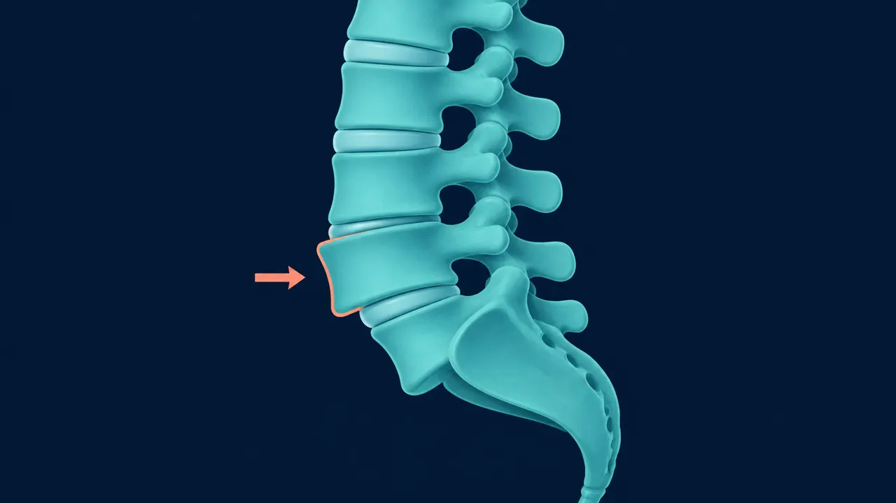

La espondilolistesis es el deslizamiento de una vértebra sobre la vértebra que tiene debajo. Es una causa frecuente de dolor lumbar crónico con ciática. Lo importante no es solo el grado del deslizamiento, sino si existe inestabilidad y compresión de las raíces nerviosas. En Querétaro, el Dr. Carlos Mendoza trata la espondilolistesis con descompresión y artrodesis (fusión) cuando los síntomas no ceden con tratamiento conservador, usando técnicas mínimamente invasivas con instrumentación pedicular.
Tipos de espondilolistesis
Espondilolistesis ístmica
Se produce por un defecto (fractura de estrés) en la pars interarticular de la vértebra. Es frecuente en adolescentes y adultos jóvenes que practican deportes con hiperextensión repetida (gimnasia, fútbol americano, clavados). El nivel más afectado es L5-S1.
Espondilolistesis degenerativa
Aparece en mayores de 50 años por artrosis de las facetas articulares, que pierden la capacidad de mantener la vértebra en posición. Es más frecuente en mujeres y en el nivel L4-L5. Suele asociarse a estenosis del canal lumbar.
Otras formas
- Congénita (displásica) — por malformación de las facetas desde el nacimiento
- Traumática — tras fractura de los elementos posteriores
- Patológica — por tumor, infección o enfermedad ósea
Clasificación de Meyerding (grados)
- Grado I — deslizamiento < 25%
- Grado II — deslizamiento 25-50%
- Grado III — deslizamiento 50-75%
- Grado IV — deslizamiento 75-100%
- Grado V (espondiloptosis) — desplazamiento completo
Síntomas
- Dolor lumbar mecánico — aumenta con la actividad, al estar de pie o caminar; mejora con el reposo
- Dolor irradiado a glúteos y piernas — por compresión foraminal de la raíz saliente
- Claudicación neurógena — necesidad de parar y descansar al caminar
- Sensación de "inestabilidad" al cambiar de posición
- Espasmo de isquiotibiales, dificultad para inclinarse hacia adelante
- En casos severos, alteración de la marcha, pérdida de fuerza o control esfinteriano
- Debilidad brusca o progresiva en piernas
- Pérdida de control de vejiga o intestino
- Anestesia "en silla de montar"
Requieren evaluación neuroquirúrgica urgente.

Diagnóstico por imagen
- Radiografías de pie con proyecciones funcionales (flexión-extensión) — cuantifican el deslizamiento y demuestran inestabilidad dinámica
- Resonancia magnética lumbar — evalúa el estado del disco, compresión radicular y estenosis foraminal
- Tomografía — útil para ver la pars interarticular y planificar los tornillos pediculares
Tratamiento
Conservador
Primera línea en la mayoría de los casos sin déficit neurológico. Incluye:
- Fisioterapia con énfasis en fortalecimiento del core y de los estabilizadores lumbopélvicos
- Evitar actividades de hiperextensión
- Analgésicos y antiinflamatorios
- Infiltraciones facetarias o foraminales en casos seleccionados
Quirúrgico — descompresión más artrodesis
Indicado cuando hay déficit neurológico, dolor incapacitante que no cede con tratamiento conservador, o progresión documentada del deslizamiento. La cirugía tiene dos objetivos:
- Descomprimir las raíces nerviosas afectadas
- Estabilizar el segmento inestable mediante artrodesis con instrumentación pedicular y caja intersomática
Las técnicas más usadas son la TLIF (transforaminal lumbar interbody fusion) y la PLIF (posterior lumbar interbody fusion), ambas realizables por mínima invasión. La caja intersomática restaura la altura del disco y libera el foramen.
Recuperación
- Hospitalización: 2-4 días
- Caminar: desde el primer día
- Actividades básicas: 3-4 semanas
- Trabajo de oficina: 4-6 semanas
- Actividad física completa: 4-6 meses (cuando la fusión está consolidada)